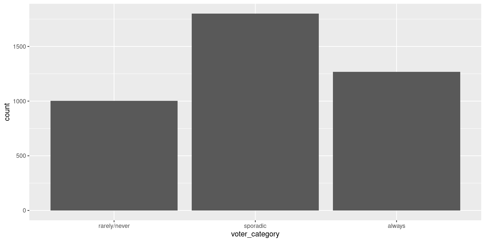
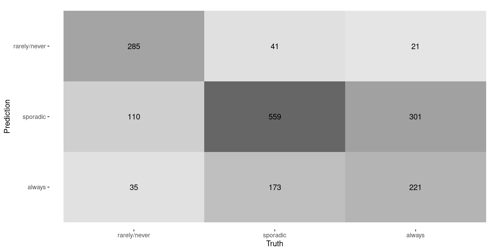
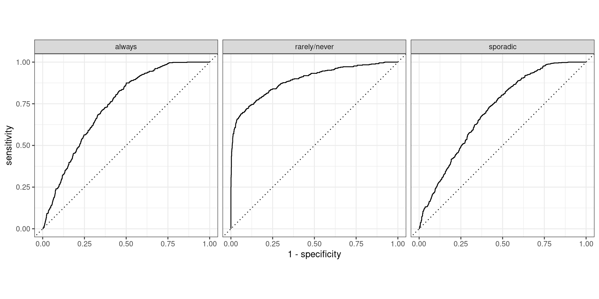

MATH 427: More More on Classification
Eric Friedlander
Computational Set-Up
Data: Voter Frequency
- Info about data
- Goal: Identify individuals who are unlikely to vote to help organization target “get out the vote” effort.
voter_data <- read_csv('https://raw.githubusercontent.com/fivethirtyeight/data/master/non-voters/nonvoters_data.csv')
voter_clean <- voter_data |>
select(-RespId, -weight, -Q1) |>
mutate(
educ = factor(educ, levels = c("High school or less", "Some college", "College")),
income_cat = factor(income_cat, levels = c("Less than $40k", "$40-75k ",
"$75-125k", "$125k or more")),
voter_category = factor(voter_category, levels = c("rarely/never", "sporadic", "always"))
) |>
filter(Q22 != 5 | is.na(Q22)) |>
mutate(Q22 = as_factor(Q22),
Q22 = if_else(is.na(Q22), "Not Asked", Q22),
across(Q28_1:Q28_8, ~if_else(.x == -1, 0, .x)),
across(Q28_1:Q28_8, ~ as_factor(.x)),
across(Q28_1:Q28_8, ~if_else(is.na(.x) , "Not Asked", .x)),
across(Q29_1:Q29_10, ~if_else(.x == -1, 0, .x)),
across(Q29_1:Q29_10, ~ as_factor(.x)),
across(Q29_1:Q29_8, ~if_else(is.na(.x) , "Not Asked", .x)),
Party_ID = as_factor(case_when(
Q31 == 1 ~ "Strong Republican",
Q31 == 2 ~ "Republican",
Q32 == 1 ~ "Strong Democrat",
Q32 == 2 ~ "Democrat",
Q33 == 1 ~ "Lean Republican",
Q33 == 2 ~ "Lean Democrat",
TRUE ~ "Other"
)),
Party_ID = factor(Party_ID, levels =c("Strong Republican", "Republican", "Lean Republican",
"Other", "Lean Democrat", "Democrat", "Strong Democrat")),
across(!ppage, ~as_factor(if_else(.x == -1, NA, .x))))Split Data
Problem: More than two categories

Define Model: Multinomial Regression
Define Recipe
mr_recipe <- recipe(voter_category ~ . , data = voter_train) |>
step_zv(all_predictors()) |>
step_integer(educ, income_cat, Party_ID, Q2_2:Q4_6, Q6, Q8_1:Q9_4, Q14:Q17_4,
Q25:Q26) |>
step_impute_median(all_numeric_predictors()) |>
step_impute_mode(all_nominal_predictors()) |>
step_dummy(all_nominal_predictors(), one_hot = FALSE) |>
step_normalize(all_numeric_predictors())Define Workflow and Fit
Look at Predictions
| .pred_class | .pred_rarely/never | .pred_sporadic | .pred_always |
|---|---|---|---|
| sporadic | 0.0317402 | 0.5122327 | 0.4560271 |
| always | 0.0463060 | 0.4464935 | 0.5072005 |
| sporadic | 0.0553279 | 0.6529393 | 0.2917328 |
| always | 0.0388506 | 0.4351109 | 0.5260385 |
| always | 0.0361359 | 0.4164662 | 0.5473979 |
| always | 0.0991499 | 0.4310622 | 0.4697879 |
Confusion Matrix

Last Time
- No “Positive” and “Negative” anymore
- Most of our metrics were based on having “Positive” vs. “Negative”
- Solution 1: 1-vs-all metrics
Evaluating Multiclass Models
- Solution 2: Average metrics across labels
- Macro-averaging average one-versus-all metrics
- Recall: \(\frac{0.66+0.72+0.41}{3} \approx 0.60\)
- Macro-weighted averaging same but weight by class size
- Recall: \(\frac{430\times 0.66+773\times 0.72+543\times 0.41}{1746} \approx 0.61\)
- Micro-averaging compute contribution for each class, aggregates them, then computes a single metric
- Recall: \(\frac{285+559+221}{430+779+543} \approx 0.61\)
- Macro-averaging average one-versus-all metrics
Questions From Last Time
- Multinomial Logistic regression:
- Each class \(k\): \[\log \frac{\text{Prob. class } k}{\text{Prob. class } K} = \beta_{0k} + \beta_{1k}X_1 + \cdots + \beta_{pk}X_p\]
- Shuba: Micro-averaged recall is the same as accuracy… CORRECT!
- Same is true of precision AND \(F_1\)
- Useful if you have a “multi-label” classification problem (not covered in this class)
Rabin’s Question
- “What does a medium sized data set mean?”
- Idea behind ML: identify patterns in data and use them to make predictions
- As data gets “bigger”:
- Patterns become clearer
- Computational complexity increases
- Informal definitions:
- Small data: not enough data to fully represent patterns
- Big data: all the info is there but special approaches need to be taken to handle all the data
Thinking about small data
- Patterns not fully represented in data \(\Rightarrow\) restrict the set of possible patterns and give model less flexibility and freedom
- Logistic regression (probably with regularization)
- Support vector machines (we haven’t talked about these yet)
- To a lesser extent: Decision Trees
- NOT KNN
Thinking about big data
- Patterns are definitely there but size introduces computational problems
- Data set can’t fit in memory
- Solution 1: Use a high-memory HPC cluster node
- Solution 2: Modify algorithms to use parts of data instead of full data set (e.g. Stochastic gradient descent)
- Algorithm scales with size of data and will take too long to run/fit
- Solution 1: Run in parallel if possible using HPC cluster
- Solution 2: Develop faster algorithms
- Implement in a compiled language like C
- Develop (faster) approximate solution
- Data set can’t fit in memory
- Curse of dimensionalality
- If \(p\) is too-big \(\Rightarrow\) too much space and things are too far apart \(\Rightarrow\) similar impact to small data but without computational benefit
- Note: big \(n\) vs. big \(p\) can present different issues
Medium Data
- Data that’s big enough to have (most) of the information you need but not so big that it presents computational issues
- KNN sweet spot
- Enough data the “nearest-neighbors” are actually “near”
- Not so much data that it takes forever to make predictions
Exploring with App
Macro-Averaging in R
voter_metrics <- metric_set(accuracy, precision, recall)
mr_fit |> augment(new_data = voter_test) |>
voter_metrics(truth = voter_category, estimate = .pred_class, estimator = "macro") |>
kable()| .metric | .estimator | .estimate |
|---|---|---|
| accuracy | multiclass | 0.6099656 |
| precision | macro | 0.6375886 |
| recall | macro | 0.5976485 |
Macro-Weighted Averaging in R
Micro-Averaging in R
What if output is probability?
- For binary case we used ROC curve and AUC…
- Similar ideas apply here:
- One vs. all
- Macro Averaging
- NO MICRO AVERAGING!
- Hand and Till extension of AUC
Plotting one-vs.-all

Macro Averaged AUC
Macro-Weighted Averaged AUC
Hand and Till AUC
- Idea behind traditional AUC: “How well are my classes being separated?”
- Hand and Till: Extend this idea to multiple-classes
- Paper
- Basic Idea: Do pairwise comparison of classes and average
Discussion
- Why do you compute averages/means?
- How would heavily imbalanced classes impact each type of averaging?
- Which type(s) of averaging weight(s) each class equally regardless of balance?
- Which type(s) of averaging favor(s) larger classes?
- Does this imply that one is better than the others?
Exploring with App
- App
- Break into groups
- Investigate how your performance metrics change between balanced data and unbalanced data
- Additional Considerations:
- Impact of boundaries/models?
- Impact of sample size?
- Impact of noise level?
- Please write down observations so we can discuss